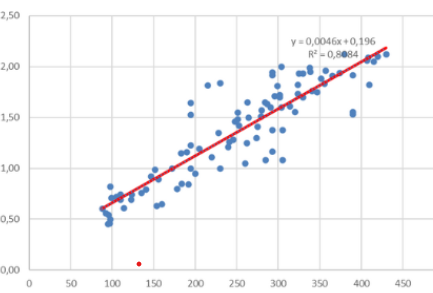
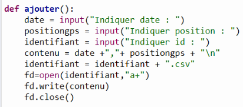

Mes Réalisations
Analyse d'une chaîne Twitch
Outil : R & RStudio
Analyse statistique complète de l'état de santé d'une chaîne. Utilisation de statistiques descriptives et création de boîtes à moustaches pour visualiser la distribution des viewers.

Régression sur les Coraux
Outil : Statistiques descriptives
Analyse des facteurs liés à la calcification des coraux. Modélisation de la relation entre le taux de calcification et la saturation d'aragonite.

Gestion de Drones
Outil : Python
Développement d'un programme de gestion de coordonnées GPS. Implémentation de fonctions pour compiler les données de vol dans des fichiers CSV.
